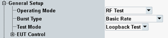

These settings are at the top of the configuration dialog.

- Connection test: The R&S CMW provides ACL connections for BR and EDR within the basic signaling option R&S CMW-KS600, see "Connection Test (BR/EDR)".
- RF test: The R&S CMW provides loopback and TX tests for BR and EDR, or direct tests for LE, see "RF Test". ACL links are tested.
Option R&S CMW-KS610 is required for BR and EDR tests.
Option R&S CMW-KS611 is required for LE tests. - Audio echo mode: The R&S CMW receives speech data from the EUT and loops it back. Audio echo mode is not available for LE.
- Profile: The R&S CMW provides an audio link for audio profile tests. An additional parameter "Profile" is displayed. It selects between hands free and audio gateway profile of the EUT. In addition, the "CMW Role" can be specified.
For detailed information, refer to "Audio Profiles (BR/EDR)".
Audio profile tests are not available for LE connections.
Option R&S CMW-KS602 is required for audio profiles.
Option R&S CMW-KS603 is required for A2DP audio profile.
Selects burst type for test mode. Selecting a burst type hides/shows parts of the GUI as required by the burst type.
- BR: used modulation is Gaussian frequency shift keying (GFSK) with the data rate 1 Mbit/s
(DH1, DH3 or DH5 packet types) - EDR: GFSK modulation used in the header, but the payload is using the differential phase shift keying (DPSK) modulation with the data rate up to 3 Mbit/s
(2-DHx or 3-DHx packet types, where x = 1, 3, 5) - LE: used modulation is GFSK with selectable data rate, packets types are test packets (RF_PHY_TestRefand).
Option R&S CMW-KS610 is required for BR and EDR.
Option R&S CMW-KS611 is required for LE.
Remote command:Selects transmitter or loopback test mode for BR/EDR packets. Refer to "RF Test".
This parameter is only relevant for the operating mode = RF Test, see "Operating Mode, Profile".
Option R&S CMW-KS610 is required.
Remote command:Selects the physical layer used for LE connections.
Option R&S CMW-KS611 is required for LE 1M PHY. Option R&S CMW-KS721 is also required for LE 2M PHY and LE coded PHY.
Defines the forward error correction coding for connections with LE coded PHY. FEC coding is defined in the core specification version 5.0 for Bluetooth wireless technology, volume 6, part B, section 3.3.
Option R&S CMW-KS721 is required.
Remote command: